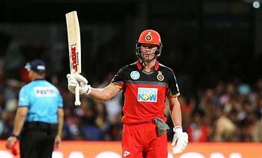

Abraham Benjamin de Villiers (born 17 February 1984) is a former South African professional cricketer. He holds the record for fastest 50,100 and 150 in ODI cricket and he is the only batsman ever to average above 50 with a strike rate of above 100 (batsmen with minimum 5000 runs). He is widely regarded as one of the greatest batsmen of all time.
RCB logo ahead 